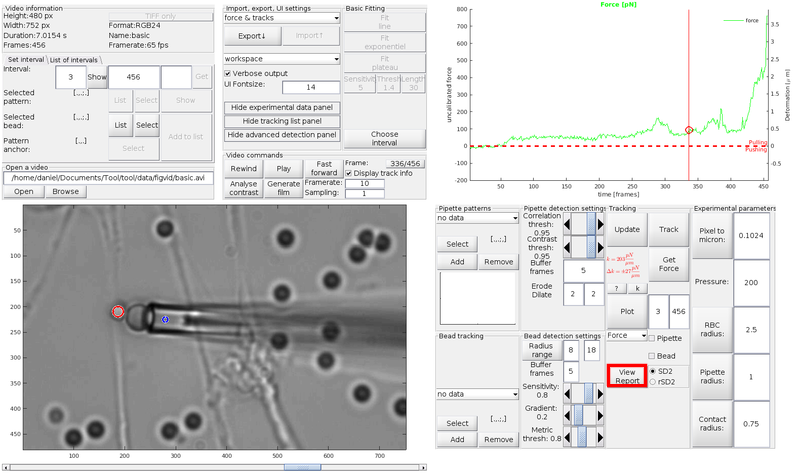

Basic guideline
This file contains step-by-step instructions with illustrative images to analyse basic video. The following image (Figure 1) shows the GUI of the tool in use. In the bottom left is video player with an open video file. On the upper right is the graphing canvas to review the results.
Figure 1: Tool GUI after openning a video and running contrast analysis
The graph in the figure 1 shows the time course of the video contrast in the graph. It can be seen that the contrast is stable; we can assume there would be no focus problem in the video (note there is no guarantee) and perform the most straightforward analysis. In will be introduced in steps from the moment the tool is started and the GUI displayed.
Contents
Open a video
- In Open a video panel, either type video file full path into the edit field, or navigate to the file using Browse button.
- Click Open. The video is openned, first frame displayed in the video player, buttons in the Video commands panel enabled and information about the video in Video information panel populated.
- You can review the video by sliding the bar under the frame (marked by the red box in figure 1), or using buttons Fast forward, Rewind, or Frame (go to button, marked by a green box in Figure 1) in Video commands panel.
- Click Analyse contrast button on the Video commands panel. This button calculates contrast time course (as seen in the graph of Figure 1)---it is the first guide for video editing/interval selection. Note You can switch between contrast measure (SD2) and local contrast measure variability (rSD2) using radiobutton on panel Tracking.
When openning a TIFF format file, a prompt dialog requests the user to provide video framerate, as the information cannot be obtained from the TIFF file itself.
In this example, we will track the whole video in one interval. It is not necessary to exclude any frames. Therefore, we only need to choose one bead and one pipette pattern. The contrast information supports the image stability assumption, but it is always a good practice to review both contrast measures and inspect the video in suspisiosly looking intervals.
Select tracked bead
- Click Select button on the Selected bead line in the Set interval panel (tab). The pointer turns into a cross-hair (on video frame canvas).
- Click within the bead You want to track. You can repositon the blue cross-mark as necessary (it is highlighted by blue ring in Figure 2).
- Confirm the mark position by clicking the same button, now labelled Confirm (highlighted by the red box in Figure 2).
- Program queries about bead contrast polarity (bright/dark) and tries to detect the bead nearest to the marker.
- If the bead is detected correctly (program delineates it by a red circle), confirm in the dialog; the bead centre coordinates are recorded.
Note that the bead position must be provided for the first frame of the processed interval of frames. Pipette pattern can be, under good video quality, selected in any processed frame.
Figure 2: Select the bead to track and confirm
Select pipette pattern
- Click Select button on the Selected pattern line. The pointer will turn into cross-hair on the video canvas.
- Draw a tight box around the pipette tip, to delimit a pattern, which will be matched throughout the video (as shown in Figure 3). You can resize and reposition the box as needed.
- Confirm the selection by clicking the button Confirm (marked by the red box in the figure 3)
- The program will prompt anchor point selection. For now, click Default---program will assign the anchor to the centre of the pattern. The pattern is saved as well as its initial coordinates. You can review the pattern (and the anchor point) clicking the Show button on the Set Interval tab.
The anchor point is the representative coordinate of the pattern. Anchor's coordinates are returned by the tracking methods, and the RBC deformation calculation is based on the distance between the anchor and the RBC centre. Default position of the anchor is in the centre of the pipette pattern. The best position for the anchor is on one axis with the bead centre and the centre of RBC-bead contact area, so that the distance is maximally aligned with the gradient of the RBC deformation.
Figure 3: Select the pipette tip pattern to be matched through the video
Set up interval limits
- In this particular example, the limits have been already set, because the whole video is processed without gaps and in full (i.e. all the frames). In the Figure 3, the blue box indicates initial frame of tracking (the bead coordinates must be always measured in the initial frame), the green box the final frame of the tracking interval.
- The yellow box in Figure 3 indicates the index of the frame, where the RBC is unstrained (i.e. RBC and bead touch, but no load is applied). This frame must be provided by user.
- When the pipette, the bead, and the interval key frames (i.e. initial, final and reference frames) are selected, it can be added to the list of intervals for tracking using button Add to list on Set interval panel.
Note that the deformation of RBC is calculated as the change in distance between points of reference supposed to be firmly attached to the RBC, i.e the centre of the bead and the anchor of the pipette. Selecting a frame (frame of reference), where the probe is under no strain allows to measure reference distance of these two items. As the distance between the two points changes during the experiment, we assume, the deformation (extesion or compression) of RBC is equal the change.
Tracking and force calculation
- After the interval is added to interval list (which is only one interval in this example), click Update button on the Tracking panel. It constructs BFPClass object, which processes all the settings from the GUI.
- Click Track button on the Tracking panel. A progress bar will appear, the video is being processed. When tracking finishes, obtained trajectories are automatically plotted in the graph area, and tracking fidelity report is displayed.
- Finally, click Get Force button on the Tracking panel. Dialog will appear warning the probe was not properly calibrated, click Proceed, the Probe calibration will be described in Advanced features section. The force is calculated and displayed in the graph, as well as deformation. RBC stiffness and its uncertainty are displayed on the left of the Get Force button.
The fidelity report can help to identify problematic intervals post-processing. In reported intervals, the tracking could be unreliable, and user may need to remove them from the tracking.
The force is calculated in linear approximation, i.e. we assume linear relation between the RBC deformation and the exerted force. This is largely true for experiments, where , for larger extensions, the linear relation begins to overestimate the force.
The major information about the experiment, the force (though uncalibrated) and the deformation are obtained in several simple steps. User is then free to analyse them and export for further processing as they like. To obtain more detailed analysis, with calibration and fine tuning, several more features are available and are covered in section Advanced features. The final GUI appearance is shown in Figure 4, with tracking marks overlaid on the video frame and the force displayed in the graph.

Figure 4: BFPTool GUI after the force analysis